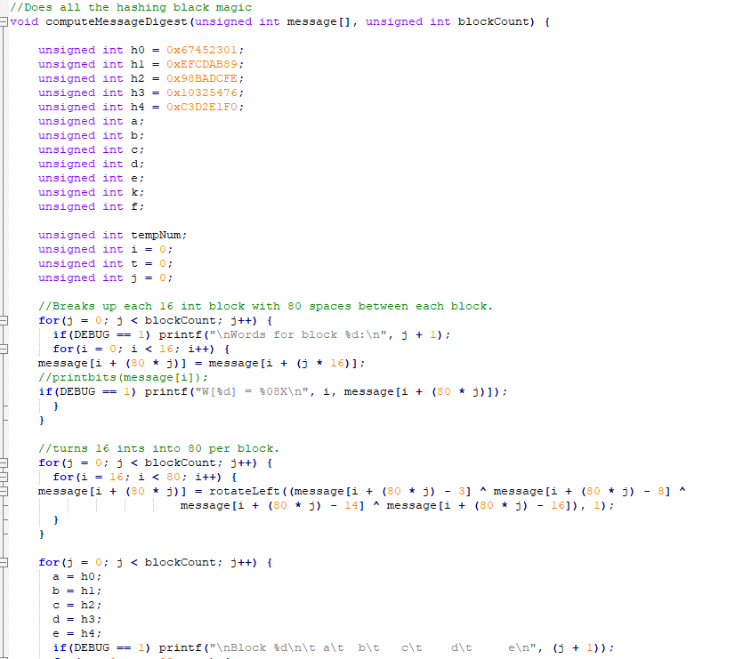

This was the final project for ICS 212, a class about program structures. All of our assignments were done in either C or C++ on a UH hosted unix server via the terminal. This is also where we get to choose our camps of either Vim or Emacs. I personally liked vim more, but it might just be because we learned it first. Before we could implement SHA-1 we had to learn what SHA-1 is. It is a hashing algorithm. Hashing algorithms deterministically convert any length input into a fixed length output. An ideal hashing algorithm will always return a unique hashed output from an input. This was the case for SHA-1 until recently in 2017 when it was broken be causing a collisions (the same output from two seperate inputs).
Implementing SHA-1 was quite the step up compared to all of our previous assignments. The hardest part was reading the data from the file and converting it into discrete 512 bit chunks that are then each consecutively shoved through the hashing function that eventually creates the hashed value. The hashing funciton was quite interesting to work with beacuse it uses a bunch of bitwise black magic operators that takes in any sized input and mushes it down into a nicely packaged 160 bit output.
This was my first time creating a piece of software with no boiler plate or example code, so I had to learn the ways of google. Eventually, I came to the realization that every question I asked had already been asked somewhere on the internet. It was just a matter of if I could find it. This is probably the most important experience I gained from this project because being able to ask the right questions can do wonders in any field, but especially in programming because it is so well documented and collbartive.
Source: sha-1